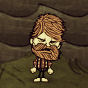
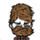
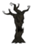
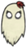
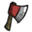
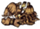

 It's calling to me!
“
It's nothing a good chopping wouldn't fix.
”
–Woodie
This page lists all of Woodie 's Character quotes which are spoken when the player examines an in-game item or object. The player can alt-click items and objects to examine them.
 Woodie (Base Game)Axe- "It's not as nice as Lucy."
Luxury Axe- "It's almost as nice as Lucy."
Lucy the Axe- "I love Lucy!"
Shovel- "Dig a hole. Plant a tree!"
Regal Shovel- "Time to dig golden holes."
Pickaxe- "Almost an axe, but not quite."
Opulent Pickaxe- "It's pretty but can't chop down trees."
Razor- "A true lumberjack never shaves."
Razor (can't shave)- "You can't shave what's not hair".
Razor (nothing left)- "It's already shorn, eh?
Razor (shaving a waken beefalo)-
Hammer- "Everyone makes mistakes, eh?"
Pitchfork- "This really isn't my style."
Campfire (upon being built)- "Where's my guitar?"
Campfire (high)- "Uh oh! It's bit high!"
Campfire (normal)- "I love a fire in the evening."
Campfire (low)- "I should probably do something about that, eh?"
Campfire (embers)- "It's almost gone."
Campfire (burned out)- "It was good while it lasted."
Fire Pit (upon being built)- "It uses wood."
Fire Pit (high)- "I'm using too much wood too fast!"
Fire Pit (normal)- "Mmmm. Smells woody."
Fire Pit (low)- "There should be some wood around here somewhere."
Fire Pit (embers)- "I should go chop some wood for that, eh?"
Fire Pit (burned out)- "If only I had some wood."
Torch- "Trees by torchlight."
Torch (run out)- "My light ran out!"
Miner Hat- "Down deep in a coal mine."
Miner Hat (run out)- "My mineing days are over."
Pumpkin Lantern- "It better not tip over."
Lantern- "High tech!"
Backpack- "That's my rucksack."
Piggyback- "I used all parts of the pig."
Bird Trap- "I'll show those birds yet!"
Bug Net- "It can collect skeeters."
Fishing Rod- "I should spend some time at the lake."
Straw Roll- "I've slept on worse back at the lumber camp."
Fur Roll- "I love camping."
Tent- "I'm used to sleeping in worse."
Trap- "Work smarter, eh?"
Honey Poultice- "At least I didn't have to pay for it."
Healing Salve- "Healthiness in goo form."
Heat Stone- "We call those 'night rocks' back home."
Heat Stone (cold)- "It's gone cold, eh?"
Heat Stone (warm)- "It's getting a bit dimmer."
Heat Stone (hot)- "I could chop all winter with that in my pocket!"
Umbrella- "This will keep my beard dry, eh?"
Compass- "True north."
Crock Pot- "It seems a waste to just leave it sitting there empty."
Crock Pot (cooking, long time left)- "It'll be a bit longer, eh?"
Crock Pot (cooking, short time left)- "Oh boy! Here it comes!"
Crock Pot (finished)- "Time for supper!"
Basic Farm and Improved Farm- "I prefer larger plants."
Basic Farm and Improved Farm (growing)- "Watched plants never grow."
Basic Farm and Improved Farm (needs fertillizer)- "I think it needs some poop."
Ice Box- "Ahhhh. Reminds me of home."
Drying Rack- "It's set up... just add meat."
Drying Rack (drying)- "This is like watching meat dry."
Drying Rack (finished)- "That looks done."
Science Machine- "I don't trust all this science stuff."
Alchemy Engine- "This is getting strange."
Winterometer- "We can build these half as tall back home."
Rainometer- "Rain makes the trees grow."
Lightning Rod- "Weather's not going to get the drop on me now."
Lightning Rod (charged)- "It's pretty like the northern lights."
Gunpowder- "Never did like this stuff."
Spear- "It lacks the heft of a good solid axe."
Hambat- "What a waste of good ham."
Boomerang- "That looks hard to throw."
Boomerang (hit self)- "Sorry! Clumsy me!"
Blow Dart- " This seems a bit agressive."
Sleep Dart- "I can make my escape if I use this!"
Fire Dart- "This seems a bit more aggressive than the last one."
Football Helmet- "Will this give me hockey hair?"
Grass Suit- "It's better than nothing."
Logsuit- "It fits me so well!"
Marble Armor- "It's hard to swing an axe while wearing this."
Bee Mine- "I don't know if the bees like this."
Tooth Trap- "This seems a bit rough."
Shelmet- "This will keep my noggin safe."
Snurtle Shell Armor- "You can never be too safe."
Bee Box- "Bees!"
Bee Box (no honey)- "I get hungry just looking at it."
Bee Box (some honey)- "I could get more if I waited."
Bee Box (full with honey)- "Honey!"
Birdcage- "It's where I try to make birds reform their evil ways."
Birdcage (occupied)- "Think about what you've done, bird!"
Birdcage (occupied, sleeping)- "They look so innocent when they dream."
Pig House- "A little duct tape would fix that right up."
Pig House (occupied and lights are off)- "Sorry! I'm not looking in!"
Pig House (occupied and lights are on)- "It's bacon - stuffed."
Hay Wall (inventory)- "I could sneeze it over."
Hay Wall (placed)- "I could sneeze it over."
Wood Wall (inventory)- "I like the look of that!"
Wood Wall (placed)- "I like the look of that!"
Stone Wall (inventory)- "Safe and secure, eh?"
Stone Wall (placed)- "Safe and secure, eh?"
Chest- "Wood is so handy! Look at all the things you can make!"
Chest (full)- "It's full, eh?"
Chest (not allowed to store, like backpack)- "That's not allowed, eh?
Sign- "Is there anything wood can't do?"
Wooden Flooring- "Flooring fit for a king!"
Carpeted Flooring- "Too classy for my tastes"
Cobblestones- "Just some ground, eh?"
Checkerboard Flooring- "Looks like one of those city - people outhouses."
Turf- "Just some ground, eh?"
Rope- "Good for holding stuff to other stuff."
Boards- "So smooth. You can really see the grain."
Cut Stone- "Part of the Canadian shield."
Papyrus- "I'd rather chop than write."
Purple Gem- "It's nothing a good chopping wouldn't fix."
Nightmare Fuel- "All of me fears in liquid form, eh?"
Meat Effigy- "I look good in wood."
Prestihatitator- "I like to call it 'the hat machine'."
Shadow Manipulator- "OK, I kind of get it now."
Pan Flute- "I only sing for Lucy."
Night Light- "What kind of darkness is that?"
Night Armor- "It makes me queasy to look at."
Dark Sword- "Nightmares can't hurt ye!"
One-man Band- "I stand on guard for thee!"
Bat Bat- "A mouse with wings?"
Chilled Amulet- "Just need a beverage to cool now, eh?"
Nightmare Amulet- "The sparkle is gone from the gem."
Life Giving Amulet- "Always have a backup plan."
Fire Staff- "I don't trust this magic business."
Ice Staff- "It reminds me of home."
Telelocator Staff (1)- "Just another use for wood."
Telelocator Staff (2)- "I wonder what this thing does."
Telelocator Focus-
Sewing Kit- "I'm pretty good at sewing."
Rabbit Earmuff- "Where I'm from these would only work in the fall."
Strawhat- "It will keep the sun off my head."
Beefalo Hat- "Now I'm the king of the beefalo!"
Beekeeper Hat- "This will keep the bees out of my eyes."
Feather Hat- "I don't want to wear that... thing."
Winter Hat- "It's a nice toque, eh?"
Top Hat- "It's too fancy."
Dapper Vest- "It's not plaid but it'll do."
Breezy Vest- "Nice and breezy"
Puffy Vest- "This could stand up to the winters back home, eh?"
Bush Hat- "It's good for hiding from nature."
Garland- "I think it looks nice with my red hair."
Walking Cane- "It's good for the back country."
Thulecite Medallion (min)- "I think it's off."
Thulecite Medallion (rising low)- "This thing just turned on!"
Thulecite Medallion (rising high)- "It's vibrating!"
Thulecite Medallion (max)- "It's going crazy!"
Thulecite Medallion (receding high)- "It's settling down."
Thulecite Medallion (receding low)- "It's nearly still."
The Lazy Forager- "This'll make the chores go by quicker!"
Magiluminescence- "I could cut wood at night with this."
Construction Amulet- "I've always been better at cuttin' anyways."
The Lazy Explorer- "This will help me get around quickly."
Star Caller's Staff- "Useful in a pinch!"
Deconstruction Staff- "This'll help me dismantle stuff!"
Pick/Axe- "It's... it's beautiful."
Thulecite Crown- "It's no toque, but it'll do."
Thulecite Club- "Metal on a stick."
Thulecite Suit- "That'll stop the hurt."
Houndius Shootius- "This needs to be installed properly."
Houndius Shootius (placed)- "That'll drive the hosers off."
 Nature - PlantsEvergreen- "It's calling to me!"
Evergreen (chopped)- "Ahhhh!"
Evergreen (burning)- "Nooo! I could have chopped it!"
Evergreen (burnt)- "What a waste."
Lumpy Evergreen- "Lucy would want me to chop it down."
Lumpy Evergreen (chopped)- "Another one!"
Lumpy Evergreen (burning)- "I'm sorry!"
Lumpy Evergreen (burnt)- "I feel terrible!"
Log- "It makes it all worthwhile."
Log (burning)- "Oh no! The fruits of my labour!"
Charcoal- "This makes me a bit sad."
Pinecone- "I should grow it and then chop it down!"
Baby Evergreen- "Here comes a tree!"
Spiky Tree- "Trees shouldn't fight back!"
Spiky Tree (chopped)- "It was a hard battle, but I won."
Spiky Tree (burning)- "That's what you get for being spiky!"
Spiky Tree (burnt)- "It deserved it."
Marble Tree- "Even Lucy can't chop that one down."
Totally Normal Tree- "I feel conflicted, eh?"
Living Log- "I am going to keep you, and call you Frank."
Sapling- "I want to see it grow so that I can chop it down."
Sapling (picked)- "Picking isn't as fun as chopping."
Sapling (burning)- "Aw! He barely had a chance!"
Sapling (picked up)- "Mmmmm. It's all twiggy."
Twigs- "I should build a tiny axe to chop these."
Grass Tuft- "Looks like kindling."
Grass Tuft (picked)- "It's gone all nubbly."
Grass Tuft (barren)- "I need to poop on it."
Grass Tuft (burning)- "I hope that doesn't spread to the trees."
Grass Tuft (picked up)- "It makes my eyes water."
Cut Grass- "I think I might be allergic to this."
Berry Bush- "Saskatoon berries?"
Berry Bush (picked)- "I didn't even share!"
Berry Bush (barren)- "It needs a good poopin'"
Berry Bush (burning)-
Berry Bush (picked up)- "Time for a little landscaping."
Reeds- "Reeds."
Reeds (picked)- "They'll be back."
Reeds (burning)- "Fire makes me nervous."
Cut Reeds- "Want to hear my loon call?"
Plant- "I wonder what it will be."
Plant (growing)- "A watched plant never grows."
Plant (ready to be picked)- "Time for grub."
Marsh Plant- "Plant."
Spiky Bush- "That's a bramble."
Spiky Bush (after picking it)- "Was that worth it?"
Spiky Bush (burning)- "Foomph!"
Flower- "That's nice."
Petals- "I wonder if Lucy would like these."
Evil Flower- "Something is wrong with that flower."
Dark Petals- "They're frowning at me with little evil faces."
Red Mushroom (unpicked)- "It's a red mushroom."
Green Mushroom (unpicked)- "It's a green mushroom."
Blue Mushroom (unpicked)- "I can never remember which ones you can eat."
Mushroom (unpicked, sleeping)- "They have their own schedule."
Mushroom (picked, the remains on the ground)- "I think I broke it."
Bee Hive- "They're all comfy - cosy in there."
Killer Bee Hive- "Why are those bees so angry?"
Honeycomb- "I almost feel bad taking this."
Hound Mound- "I know better than to mess with that."
Bone- "It's covered with dog spit, eh?"
Touch Stone- "I don't know if I should touch it."
Harp Statue- "You lost your head, eh?"
Marble Pillar- "Somebody must have built that."
Marble- "Feels like a government building."
Merm House- "They're not the handiest."
Merm Head- "Smells like a factory trawler."
Pig Head- "What a waste of good pork."
Pig Torch- "How did they do that without thumbs?"
Basalt Boulder- "That rock ain't going to move."
Boulder- "I could break it down if I tried hard enough."
Rocks- "For the times when wood won't work."
Flint- "This could be an axe head."
Nitre- "It's how we build the railway."
Gold Nugget- "You can't make a coffee table out of gold. Well, maybe you can. But you shouldn't."
Headstone (1)- "It says milk. eggs. bacon"
Headstone (2)- "Here lies some guy. Blah blah blah."
Headstone (3)- "Hey, that's my name!"
Headstone (4)- "This headstone is blank."
Grave- "I should probably leave that alone."
Grave (dug)- "Sorry! Don't haunt me!"
Suspicious Dirt Pile- "Hey! A clue!"
Animal Tracks- "A large woodland creature passed this way!"
Animal Tracks (lost its trail)- "The beastie got away."
Animal Tracks (found)- "The beastie is nearby."
Wooden Thing- "It's a... magic thing, I think."
Wooden Thing (locked)- "There are bits missing, eh?"
Wooden Thing (partially assembled)- "It's almost ready, eh?"
Wooden Thing (fully assembled)- "Ready to go, eh?"
Ring Thing- "Ringy, eh?"
Crank Thing- "Cranky, eh?"
Box Thing- "Boxy, eh?"
Metal Potato Thing- "Potato - y, eh?"
Wormhole (closed)- "That looks like a bum!"
Wormhole (open)- "I'm not sure I want to look at that, eh?"
Wormhole (exited)- "It was gross in there!"
Pond- "I can't swim!"
Skeleton- "Sorry, friend."
Spider Den- "Holy Mackinaw! Look at that thing!"
Spider Egg- "Why would I want to carry that around?"
Rabbit Hole- "I doubt there are trees down there."
Walrus Camp- "Walruses are nearby, eh?"
Walrus Camp (Summer)- "This won't be safe come winter."
Plugged Sinkhole- "It's bunged up."
Sinkhole- "It looks like Sudbury down there."
Rope to Surface- "There are probably trees up there."
Red Mushtree- "Maybe I should chop it."
Green Mushtree- "It's made of wood."
Blue Mushtree- "I can't let that stand."
Light Flower- "Shiny!"
Light Bulb- "I looks chewy." [sic]
Stalagmite- "I'm not too interested in rocks."
Stalagmite (pointy)- "I'm not too interested in rocks."
Spilagmite- "I should skedaddle before they come out of there."
Slurtle Mound- "Are you guys doing OK in there?"
Rabbit Hutch- "Is it carrot flavoured?"
Fern- "Hey! It's a fern!"
Foilage- "Looks like a salad."
Cave Banana Tree- "They don't have those back home."
Ancient Statue- "Another hoser."
Broken Ancient Pseudoscience Station- "Looks a little worn out."
Ancient Pseudoscience Station- "There's axe marks on these altar stones."
Broken Clockworks- "Dead metal"
Relic- "Piece of furniture."
Cave Lichen- "Looks barely edible."
Ornate Chest- "What's in the box?!"
Nightmare Light- "They should have used wood."
Thulecite- "It's the wood of the caves!"
Thulecite Wall- "Crumbling but still secure, eh?"
Thulecite Wall (item)- "Heh, stoned again eh?"
Clockwork Knight- "Maxwell's own mounted police."
Clockwork Bishop- "It's been a while since my last confession."
Clockwork Castle- "Hmm.. does the rook move in a straight line? I forget."
Damaged Bishop- "I can see the internal workings."
Damaged Rook- "The gears are spilling out."
Charlie (the darkness monster)- "Who's there, eh?"
Charlie (attacked by)- "Yeouch! That was rough!"
Hound- "They'd be good at pulling a sled."
Red Hound- "Hot hound!"
Blue Hound- "Arctic hounds?"
Hound's Tooth- "Beauty, eh?"
Spider- "That's the biggest spider I've ever seen!"
Spider (sleeping)- "Careful, now, eh?"
Spider (dead)-
Spider Warrior- "They come in yellow now, eh?"
Spider Warrior (sleeping)- "I don't want to wake it."
Spider Warrior (dead)-
Spider Gland- "I think it's poison."
Silk- "Spiders give me the willies."
Krampus- "Back off, hoser!"
Krampus Sack- "I feel bad taking someone else's sack."
Merm- "What foul sea did that crawl out of?"
Tentacle- "Are there squid down there?"
Tentacle Spike- "It wobbles when you wave it."
Tentacle Spots- "I'm blushing!"
Big Tentacle (Tentapillar)- "It's so big!"
Baby Tentacle- "Are those squid babies?"
Pig Guard- "I don't want to make him mad."
Werepig- "What happened to him?!"
Ghost- "Boo! Ha ha!"
MacTusk- "Oh no. Walruses again!"
Weetusk- "Why are they so far south?"
Walrus Tusk- "He had a cavity, eh?"
Tam 'o Shanter- "My grandad wore a hat like this."
Mosquito- "That'll take a pint out of me!"
Mosquito (picked up)- "What do I do with this, eh?"
Nearby Mosquitoes- "Skeeters!"
Cave Spider- "Tricky devil!"
Spitter- "Spitting is rude!"
Batilisk- "Who taught that rat to fly?"
Snurtle- "Spirals!"
Slurtle- "He's just misunderstood."
Slurtle Slime - "Someone needs a tissue."
Broken Shell- "I broke his home. I feel bad."
Lureplant- "Is that meat?"
Fleshy Bulb- "It's warm and lumpy."
Eye Plant- "It needs to mind its own business."
Slurper- "I think it's living hair."
Dangling Depth Dweller- "They're smart to live away from the corruption."
Depths Worm (emerged)- "WOOORM!"
Depths Worm (lure)- "I know a plant when I see one. This'n an impostor!"
Depths Worm (burrowed)- "Be wary the moving ground."
Beefalo- "He smells like a sod house."
Beefalo (following)- "I think he likes me."
Beefalo (sleeping)- "He's catching some zeds."
Beefalo (shaved)- "Cheer up, eh?"
Beefalo Wool- "It feels like my beard."
Beefalo Horn- "I don't know if I should put my mouth on that."
Baby Beefalo- "A face only a mother could love."
Baby Beefalo (sleeping)-
Nearby Bees- "Bees! Bees!"
Bee- "She's making the flowers grow."
Bee (picked up)- "Now what do I do with it?"
Killer Bee- "That bee doesn't seem as friendly."
Killer Bee (picked up)- "He's none to pleased with his situation."
Stinger- "Ouch! It's pointy."
Pig- "Walking back bacon!"
Pig (following)- "We're a team! Yah!"
Pig (sleeping)-
Pig Skin- "Bacon with tail."
Bunnyman- "He looks friendly enough."
Beardlord-
Bunny Puff- "I feel sorry for him."
Frog- "I don't trust anything that can't decide between air and water."
Frog (sleeping)- "It's tired."
Frog (dead)- "Ex - frog."
Koalefant- "He looks tasty."
Winter Koalefant- "They get tastier in the winter."
Rock Lobster- "Lobster supper time!"
Pengull- "Take off! To the Great White North! Beauty."
Splumonkey- "Well then. That's a new one."
Butterfly- "I never trusted those things, eh?"
Butterfly (picked up)- "Where are you going to run?"
Crow- "He's planning something. I can tell."
Crow (picked up)- "You'll pay for your crimes, crow!"
Jet Feather- "A gross feather."
Redbird- "What a snotty little jerk."
Redbird (picked up)- "Don't get comfortable, birdie."
Crimson Feather- "A disgusting feather."
Snowbird- "Go fly south or something!"
Snowbird (picked up)- "It's stealing my warmth."
Azure Feather- "A stupid feather."
Gobbler- "More birds! Why is it always birds?"
Eye Bone- "No one ever told him it was rude to stare."
Eye Bone (Chester dead, eye closed)- "I wonder if it will ever wake up again."
Ashes of Eye Bone- "This used to be an eyebone."
Chester- "He's doing his best!"
Rabbit- "Dang ground squirrels..."
Rabbit (picked up)- "I'd feel bad eating him."
Beardling-
Beardling (picked up)-
Fireflies- "Reminds me of Algonquin park."
Fireflies (picked up)- "I've got a pocket full of sunshine!"
Mandrake- "What have I done?"
Mandrake (following)- "It's looking at me."
Mandrake (dead)- "Sorry, little guy."
Mandrake (cooked 1)- "Sorry!"
Mandrake (cooked 2)- "Was that a bad thing to do?"
Mandrake (knocked out by)- "Ow. What was that?"
Tallbird- "I don't trust birds that can't fly, either."
Tallbird Nest (empty)- "Nothing there"
Tallbird Nest (with egg)- "I should steal its egg to teach it a lesson." [sic]
Tallbird Egg- "What's in here?"
Tallbird Egg (cooked)- "It tastes like justice."
Hatching Tallbird Egg- "It's hatching."
Hatching Tallbird Egg (dead, eating the egg)- "You can taste the beak, eh?"
Hatching Tallbird Egg (too hot)- "Is it crying?"
Hatching Tallbird Egg (too cold)- "Too cold for you?"
Hatching Tallbird Egg (long time left)- "Birds are never prompt."
Hatching Tallbird Egg (short time left)- "Any time now."
Smallbird- "What do you want?"
Smallbird (hungry)- "It wants something."
Smallbird (starving)- "I think it's starving."
Smallish Tallbird- "It's growing up to be a jerk, just like its parents."
Smallish Tallbird (hungry)- "Are you ALWAYS hungry?"
Smallish Tallbird (starving)- "It getting wild with hunger."
Pecked by a Smallish Tallbird- "Sorry! I'll try harder!"
Treeguard (Leif)- "I'm sorry about all of those trees!"
Spider Queen- "You're not my queen!"
Spider Hat- "She's a real beaut, ain't she?" [sic] Deerclops- "That's a big moose!"
Deerclops Eyeball- "Now what is this good for?"
Ancient Guardian- "Another poor soul with a curse."
Guardian's Horn- "That's a nice horn, eh."
 Mobs - OtherMaxwell- "Why does he hate me?"
Pig King- "He's not MY king."
Wes (trapped)- "Who's that hoser?"
Abigail-
Bird Egg- "There's a bird in there thinking evil bird thoughts."
Bird Egg (cooked)- "Well, at least it never became a bird."
Monster Meat- "I'm not hungry enough for that."
Cooked Monster Meat- "I still don't want to eat it."
Monster Jerky- "I still don't want to eat it."
Meat- "Tastes like moose."
Cooked Meat- "Just like my dear old ma used to make."
Leafy Meat- "That's gross!"
Cooked Leafy Meat- "Cooking didn't help much"
Jerky- "It tastes like survival."
Drumstick- "October food."
Fried Drumstick- "Thanks, turkey."
Fish- "Looks like a cod."
Cooked Fish- "I wish I had some chips."
Morsel- "I wish this were bigger."
Cooked Morsel- "That'll just make me hungrier!"
Small Jerky- "Just a bite."
Koalefant Trunk- "It's pretty thin."
Winter Koalefant Trunk- "It's thick and hairy."
Koalefant Trunk Steak- "I think it boiled off all of the nose cheese."
Frog Legs- "They're still jumping!"
Cooked Frog Legs- "At least they stopped moving."
Batilisk Wing- "Gross!"
Cooked Batilisk Wing- "Gross! And tasty! So confusing!"
Pomegranate- "That's too fancy for me."
Sliced Pomegranate- "This would go good on flapjacks."
Durian- "It smells bad."
Extra Smelly Durian- "It smells even worse."
Dragon Fruit- "I've never seen one of those before."
Prepared Dragon Fruit- "It tastes like maple syrup."
Berries- "I have a heartier appetite than that."
Roasted Berries- "Tastes like warm berries."
Cave Banana- "It tastes tropical."
Cooked Banana- "I cooked it."
Corn- "I like it, but not in everything that I eat."
Popcorn- "Cooked with the goodness of corn."
Carrot (in the ground)- "I'm not one for vegetables, eh?"
Carrot (picked up)- "That's rabbit food."
Roasted Carrot- "That's rabbit food."
Pumpkin- "I don't like to eat things that grow on the ground."
Hot Pumpkin- "Pies are good."
Eggplant- "I bet birds have something to do with this."
Braised Eggplant- "Suspiciously birdy."
Red Cap- "I don't know..."
Cooked Red Cap- "Only if I get really hungry."
Green Cap- "I've eaten stranger things in the woods."
Cooked Green Cap- "I don't trust it."
Blue Cap- "That's not meat."
Cooked Blue Cap- "That's not meat."
Glow Berry- "This thing will be useful."
Bacon and Eggs- "Awww. It's just front bacon."
Butter Muffin- "Crunchy!"
Dragonpie- "Almost as good as butter tarts!"
Fishsticks- "Elegant dining in a box."
Fish Tacos- "Tastes like the sea, eh?"
Froggle Bunwich- "You can really taste the swamp."
Fruit Medley- "In syrup!"
Honey Ham- "But it's not a holiday..."
Honey Nuggets- "One of my favourite meals!"
Fist Full of Jam- "Now to find peanut butter."
Kabobs- "The stick really adds to the flavour."
Mandrake Soup- "It's a tiring soup."
Meaty Stew- "Sticks to your ribs."
Meatballs- "All the meats!"
Monster Lasagna- "This is cat food!"
Pumpkin Cookie- "This will keep me chopping."
Taffy- "Sugary good."
Turkey Dinner- "Turkey day is here again!"
Unagi- "It'll fill ya up."
Waffles- "I prefer flapjacks."
Wet Goop- "Better than some things I've eaten!"
Seeds- "Not trees."
Seeds (Carrot)- "Tiny carrots."
Seeds (Corn)- "I'm more of a hewer of wood than a tiller of soil."
Seeds (Dragonfruit)- "Maybe I can grow more."
Seeds (Durian)- "Why would I want to grow more of those things."
Seeds (Eggplant)- "Hmmm. I'm not sure."
Seeds (Pomegranate)- "Seedy."
Seeds (Pumpkin)- "It's a seed."
Roasted Seeds- "We call this 'lumberjack surprise'."
Honey- "Mmmmmm-mmmm. Bee syrup."
Butterfly Wings- "I'm sorry! I'm a terrible person!"
Butter- "I prefer margarine."
Rot- "Aw, it's Diefenbakered."
Rotten Egg- "One less bird. Good."
Blueprint- "I'm not one for book learning."
Gears- "I never could figure these things out."
Ash- "It all burnt up."
Red Gem- "I see within it the fiery death of a thousand trees."
Blue Gem- "It's very cold."
Yellow Gem- "I can see the stars in it."
Green Gem- "How flashy."
Orange Gem- "It's shimmering."
Beard Hair- "These aren't from me."
Manure- "Don't poop in camp!"
Guano- "It stinks less than the other kind."
Melty Marbles- "I used to play that game."
Fake Kazoo- "Not the real thing, eh?"
Gord's Knot- "Reminds me of a story I heard once."
Gnome- "Don't ask me."
Tiny Rocketship- "I needs a robot arm, eh?" [sic]
Frazzled Wires- "They're not good any more, eh?"
Ball and Cup- "I could play this for hours!"
Hardened Rubber Bung- "If I find a tub, I'm all set."
Mismatched Buttons- "I just sew my clothing shut around me when I put it on."
Second-hand Dentures- "Choppers for old folks."
Lying Robot- "Quiet, you!"
Dessicated Tentacle- "It's all withered."
Failed- "Oh well. I gave it a good try."
Obelisk that is down while sane (sane, down)- "That makes sense."
Obelisk that is down while sane (insane, up)- "I don't know how to move that."
Obelisk that is up while sane (sane, up)- "Something is off about that rock, eh?"
Obelisk that is up while sane (insane, down)- "Where did it go?!"
Ashes of Divining Rod- "I guess that doesn't go through there."
Divining Rod (before picked up from its starting base)- "That's a weird looking rod."
Divining Rod- "I wonder if it gets the hockey game."
Divining Rod (cold)- "It's really fuzzy from here."
Divining Rod (warm)- "I think I'm getting closer."
Divining Rod (warmer)- "Woah, careful there, bud."
Divining Rod (hot)- "Loud and clear! Something's near!"
Divining Rod Base- "I looks like something plugs in."
Divining Rod Base (ready to unlock)- "It's ready to be unlocked."
Divining Rod Base (unlocked)- "Now all it needs is to be turned on."
Maxwell's Door- "I wonder if that's the way out of here."
Maxwell's Phonograph- "Better than most of the stuff on the radio."
Maxwell's Light- "That's unnatural."
Maxwell Statue- "He's kind of a jerk, eh?"
Maxwell's Tooth Trap- "He's not playing fair, eh?"
Maxwells Tooth Trap (went off)-
Beemine (Maxwell's)- Hey! "That's just mean!"
Sick Wormhole- "It smells a bit off, eh?"
Nightmare Lock- "Where is the key?"
Nightmare Throne- "I've seen nicer chairs."
Male character on Nightmare Throne- "Do you need help?"
Female character on Nightmare Throne- "She's trapped!"
Other character on Nightmare Throne- "It's trapped!"
Generic- "What's that, eh?"
Freezing- "It's cold out here!"
Turning Winter-
Battlecry- "Get over here, eh!"
Activated a Bee Mine- "Bees! Bees!"
Leaving Combat- "I think that's enough."
Dusk- "It's almost my bedtime."
Entering Light- "Brilliance!"
Entering Darkness- "Who turned out the lights?"
Doing things in the dark- "It's dark, eh!"
Failed to do something- "Sorry, I can't do that."
Failed to craft something- "I can't do that right now."
Trying to sleep during the day- "Only a hoser sleeps during the day."
Trying to sleep when too hungry- "My belly is too empty to fall asleep."
Trying to sleep near monsters- "It's too scary out to sleep."
Hounds are coming- "There's something out there."
Deerclops is coming- "What was that?"
Inventory Full- "I can't carry any more kit."
Eating- "Tasty!"
Eating (spoiled food)- "That was a wee bit manky."
Eating (stale food)- "I got to that one just in time."
Eating (painful food)- "That was past the expiry date."
Hungry- "I'm getting peckish."
Earthquake- "The ground is heaving!"
 Lucy the Axe quotesEquipped (1)- "Let's chop some trees!"
Equipped (2)- "Nice day for a walk!"
Equipped (3)- "We make a good team!"
Equipped (4)- "There must be some trees around here somewhere."
Equipped (5)- "Woodie! Chop some trees!"
Equipped (6)- "All work and no play makes me want to chop trees."
Equipped (7)- "Chop chop chop. Heh."
On Ground (1)- "Come back! Take me with you!"
On Ground (2)- "Where did you go?"
On Ground (3)- "Take me with you!"
On Ground (4)- "What if I get stolen?"
In Container (1)- "It's dark in here!"
In Container (2)- "I'm scared!"
In Container (3)- "I can't see anything!"
In Container (4)- "I hate it in here."
Other Owner (1)- "You're not Woodie!"
Other Owner (2)- "Put me down!"
Dropped (1)- "You'll come back right?"
Dropped (2)- "What did I say?"
Dropped (3)- "I... don't understand!"
Dropped (4)- "Can we talk about this?"
Dropped (5)- "Don't forget about me!"
Chopped (1)- "Woooooo!"
Chopped (2)- "Yeah!"
Chopped (3)- "Stupid tree!"
Chopped (4)- "Nom nom nom!"
Chopped (5)- "We did it!"
Chopped (6)- "This is AWESOME!"
Chopped (7)- "Death to all trees!"
Chopped (8)- "Again! Let's chop another!"
Chopped (9)- "Nice swing!"
Chopped (10)- "Too easy!"
Beaver Low (1)- "Are you OK?"
Beaver Low (2)- "You look distracted, Woodie."
Beaver Low (3)- "Calm down! It's just a tree!"
Beaver Mid (1)- "Woodie? Can you hear me?"
Beaver Mid (2)- "You might want to slow down a bit."
Beaver Mid (3)- "Careful, you're getting yourself worked up!"
Beaver Mid (4)- "Don't chop too fast. You know what will happen!"
Beaver High (1)- "Woodie! Be careful!"
Beaver High (2)- "It's starting!"
Beaver High (3)- "You're not looking so good!"
Beaver High (4)- "Your teeth are growing!"
Beaver High (5)- "Watch out! You're going to turn!"
Beaver Back Down (1)- "That was a close one!"
Beaver Back Down (2)- "I think we'll be alright."
Beaver Back Down (3)- "You're looking much better now."
Beaver Back Down (4)- "It's passed. For now."
Beaver Back Down (5)- "It's back in the lodge. Phew."
Transformation To Beaver (1)- "Oh no!"
Transformation To Beaver (2)- "It happened again!"
Transformation To Beaver (3)- "The curse!"
Transformation To Beaver (4)- "I warned you!"
Transformation To Beaver (5)- "Woodie!"
Transform Back To Woodie (1)- "You're back!"
Transform Back To Woodie (2)- "Quick! Pick me up!"
Transform Back To Woodie (3)- "Are you OK?"
Transform Back To Woodie (4)- "Don't let that happen again!"
Transform Back To Woodie (5)- "Everything is going to be fine. Just focus."
 UnimplementedDEVTOOL- "I'm not commenting on that."
UNIMPLEMENTED- "It doesn't look safe."
ANNOUNCE_FREEDOM- "I got out!"
ANNOUNCE_NO_TRAP- "Close one!"
BOAT- "Must have hit a nor'easter."
SKULLCHEST- "That's scary!"
TREASURECHEST_TRAP- "Something is not quite right about that chest."
Woodie (Reign of Giants) Tools Lights Survival Food Science Fight Structures Turfs Refine Magic Dress Nature - Plants Nature - Objects Mobs - Monsters Mobs - Neutral Animals Mobs - Passive Animals Mobs - Tallbird Family Mobs - Bosses Mobs - Other Food - Meats Food - Fruits Food - Vegetables Food - Crock Pot Food - Other Misc Items Announcements Woodie's examination quote for Monster Lasagna is a reference to the comic strip Garfield, where the main character is a feline whose favorite food is Lasagna.
Woodie's quote on Lucy is a reference to the famous sitcom, I love Lucy .
{kind=link}
{kind=link}
{kind=link}
{kind=link}
{kind=link}
{kind=link}